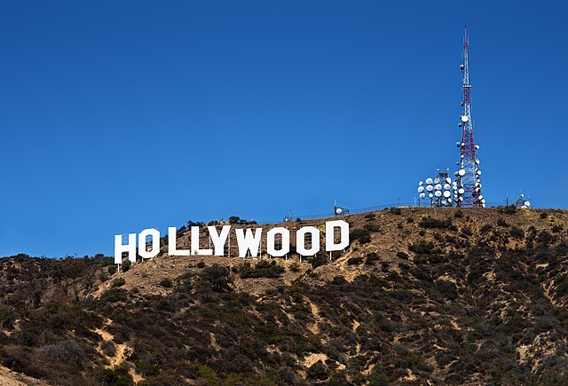
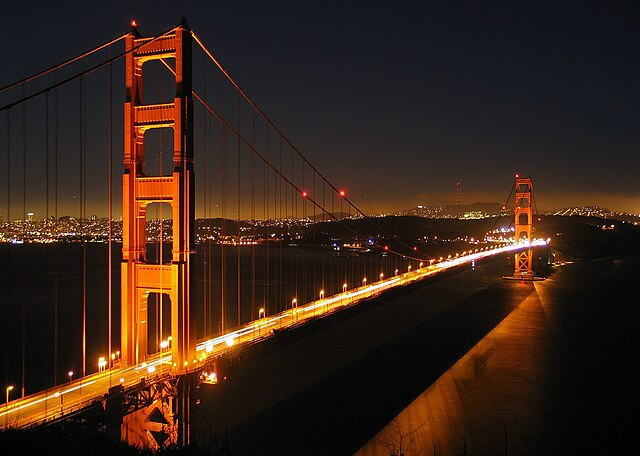

California
A beautiful country filled with small historical villages and big vibrant cities, Germany is the perfect place for people who like a mix of historical and modern.
Places worth visiting:
- Hollywood - a town known for its film industry, this is the most well-known movie area in the United States of America

Thomas Wolf - Wikimedia Commons - CC BY SA
- Golden Gate Bridge - a famous bridge in San Francisco, California, it is known for its bright red colour at day, and has a gold sheen on it at night

Daniel Schwen - Wikimedia Commons - CC BY SA
Popular Food:
- Californian Clam Chowder - a yummy thick soup made up of clams, potatoes, and onion, this soup can also be changed to have crab instead of clams
- California Pizza - a take on the classic Italian pizza, Californian pizza consists of a thin base and Californian toppings such as duck, figs, and even goat cheese